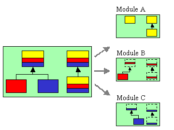

MixJuice is an enhancement of the Java language which adopts difference-based modules instead of Java's original module mechanism. We have completely separated the class mechanism and the module mechanism, and then unified the module mechanism and the differential programming mechanism. This module mechanism enhances the extensibility, reusability and maintainability of programs. In particular, collaborations, which crosscut several classes, can be separated into different modules that can be developed and tested by independent development teams.

The language features of MixJuice can be extended by adding EPP plug-ins. EPP (Extensible Pre-Processor) is a language extension framework, which are used to implement the MixJuice language. Currently, Collection plug-in and assert2 plug-in are included in the MixJuice language by default. Collection plug-in provides built-in parameterized collection types and foreach statement. assert2 plug-in is an emulation of Java2 1.4 assert statement.
By unzipping the downloaded zip file, you will find the directory mj. Add mj/bin to your PATH. CLASSPATH need not to be set.
mj-1.1.zip (2003-01-17)
This document provides the knowledge obtained by porting a rather large Java program to MixJuice . The program has about 10 thousands lines excluding comment.
Porting Grappa to MixJuice [New !]
We have applied the notion of "Design by Contracts" and "behavioral subtyping" to mixins and difference-based modules. See the following paper for more details.
Yuuji Ichisugi, Akira Tanaka, Takuo WATANABE:
"Extension Rules: Description Rules for Safely Composable Aspects"
Technical Report of National Institute of Advanced Industrial Science and Technology(AIST), AIST01-J00002-4, Feb 2003.
tr2003.pdf [New !]
The book "Design Patterns" written by GoF explains not only the merits of design patterns, but also the limitations of extensibilty, type-safety and encapsulation. We have found that many of these limitations can be removed in MixJuice. See the following page for more details.
Design Pattern improvement catalog for MixJuice (In English) [New !]
See also the following work that are strongly related to ours.
Hannemann, J., Kiczales, G.
"Design Pattern Implementation in Java and AspectJ",
In Proc of OOPSLA 2002.
Available from this page:
"Aspect-Oriented Design Pattern Implementations"
We have desinged "layerd class diagram", which is an extension of
UML class diagram.
Layerd class diagram is useful to explain how programs are
extended by modules in MixJuice.
This notation may be used for other AOP languages and open-class languages,
such as AspectJ, Hyper/J, Cecil, Ruby etc.
Here is description with some examples.
dm-elisp is an emacs-lisp with difference-based modules.
Although the current implementation is not practical,
I think this module mechanism has a potential
to become the standard module mechanism of various languages,
including emacs-lisp.
EPP is a language extension framework, which are used to implement the MixJuice language.
Aspect-Oriented Software Development: http://aosd.net
Yuuji ICHISUGI
National Institute of Advanced Industrial Science and Technology(AIST)

http://staff.aist.go.jp/y-ichisugi/